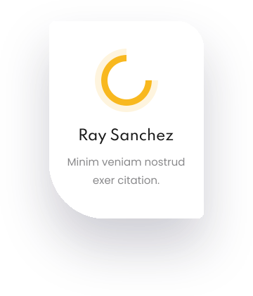

Nos résultats
Un impact mesurable sur la filière banane
Économique, environnemental, social — FRESH'O participe au développement durable de l'Afrique de l'Ouest.
-
+30%
Augmentation moyenne des rendements
-
2,500+
Producteurs bénéficiaires
-
850 T CO₂
Économisées annuellement vs production conventionnelle
-
380+
Emplois directs et indirects créés




Développement économique
Un moteur de croissance économique
FRESH'O crée de la valeur à chaque étape de la filière : producteurs, transporteurs, exportateurs et emplois qualifiés.
- Revenus des producteurs — Augmentation de 25-40% grâce aux rendements supérieurs
- Emplois qualifiés — Techniciens agronomes, biologistes, opérateurs
- Filière dynamisée — Investissements privés et partenariats régionaux
- Exportations — Accès amélioré aux marchés d'export (normes ISPM)
Les trois dimensions
Notre impact multidimensionnel
FRESH'O crée de la valeur environnementale, économique et sociale de manière intégrée et mesurable.
-
Impact Environnemental
Réduction des émissions CO₂, optimisation de l'eau, zéro pesticide dans nos installations.
Climat -
Impact Économique
Augmentation des revenus, création d'emplois, développement d'une filière durable.
Revenu -
Impact Social
Formation des producteurs, inclusion des femmes et jeunes, amélioration des conditions de vie.
Équité
Récit d'impact
Les producteurs témoignent
Découvrez comment FRESH'O transforme concrètement la vie des producteurs de banane.
- « Avant FRESH'O » — Rendements faibles, présence de maladies, instabilité de la production.
- « Après FRESH'O » — Rendements doublés, plants sains, revenus stables, accès à de nouveaux marchés.
- « Témoignage » — « Les vitroplants FRESH'O ont transformé ma petite exploitation. J'ai entraîné mes voisins ! »